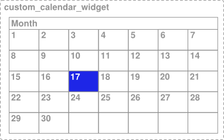

Applications built for Android are more accessible to users with visual, physical or age-related limitations when those users activate accessibility services and features on a device. These services make your application more accessible even if you do not make any accessibility changes to your code. However, there are steps you should take to optimize the accessibility of your application and ensure a pleasant experience for all your users.
Making sure your application is accessible to all users requires only a few steps, particularly when you create your user interface with the components provided by the Android framework. If you use only the standard components for your application, the steps are:
- Add descriptive text to user interface controls in your application using the
android:contentDescriptionattribute. Pay particular attention toImageButton,ImageViewandCheckBox. - Make sure that all user interface elements that can accept input (touches or typing) can be reached with a directional controller, such as a trackball, D-pad (physical or virtual) or navigation gestures .
- Make sure that audio prompts are always accompanied by another visual prompt or notification, to assist users who are deaf or hard of hearing.
- Test your application using only accessibility navigation services and features. Turn on TalkBack and Explore by Touch, and then try using your application using only directional controls. For more information on testing for accessibility, see the Accessibility Testing Checklist.
If you build custom controls that extend the View class, you must complete
some additional work to make sure your components are accessible. This document discusses how to
make custom view controls compatible with accessibility services.
Note: The implementation steps in this document describe the requirements for making your application accessible for users with blindness or low-vision. Be sure to review the requirements for serving users who are deaf and hard of hearing in the Accessibility Developer Checklist
.Labeling User Interface Elements
Many user interface controls depend on visual cues to indicate their meaning and usage. For
example, a note-taking application might use an ImageButton with a
picture of a plus sign to indicate that the user can add a new note. An EditText component may have a label near it that indicates its purpose. A user
with impaired vision can't see these cues well enough to follow them, which makes them useless.
You can make these controls more accessible with the
android:contentDescription XML layout attribute. The text in this attribute does not
appear on screen, but if the user enables accessibility services that provide audible prompts, then
when the user navigates to that control, the text is spoken.
For this reason, set the
android:contentDescription attribute for every ImageButton,
ImageView, CheckBox
in your application's user interface, and add descriptions to any other input controls that might
require additional information for users who are not able to see it.
For example, the following ImageButton sets the content description for
the plus button to the add_note string resource, which could be defined as “Add note" for an
English language interface:
<ImageButton
android:id=”@+id/add_note_button”
android:src=”@drawable/add_note”
android:contentDescription=”@string/add_note”/>
By including the description, an accessibility service that provides spoken feedback can announce "Add note" when a user moves focus to this button or hovers over it.
Note: For EditText fields, provide an
android:hint
attribute instead of a content description, to help users understand what content is
expected when the text field is empty. When the field is filled, TalkBack reads the entered
content to the user, instead of the hint text.
Enabling Focus Navigation
Focus navigation allows users with disabilities to step through user interface controls using a directional controller. Directional controllers can be physical, such as a trackball, directional pad (D-pad) or arrow keys, or virtual, such as the Eyes-Free Keyboard, or the gestures navigation mode available in Android 4.1 and higher. Directional controllers are a primary means of navigation for many Android users.
To ensure that users can navigate your application using only a directional controller, verify that all user interface (UI) input controls in your application can be reached and activated without using the touchscreen. You should also verify that clicking with the center button (or OK button) of a directional controller has the same effect as touching a control that already has focus. For information on testing directional controls, see Testing focus navigation.
Enabling view focus
A user interface element is reachable using directional controls when its
android:focusable attribute is set to true. This setting allows users to focus
on the element using the directional controls and then interact with it. The user interface controls
provided by the Android framework are focusable by default and visually indicate focus by changing
the control’s appearance.
Android provides several APIs that let you control whether a user interface control is focusable and even request that a control be given focus:
If a view is not focusable by default, you can make it focusable in your layout file by setting
the
android:focusable attribute to true or by calling the its setFocusable() method.
Controlling focus order
When users navigate in any direction using directional controls, focus is passed from one user interface element (view) to another, as determined by the focus order. This order is based on an algorithm that finds the nearest neighbor in a given direction. In rare cases, the algorithm may not match the order that you intended or may not be logical for users. In these situations, you can provide explicit overrides to the ordering using the following XML attributes in your layout file:
-
android:nextFocusDown - Defines the next view to receive focus when the user navigates down.
-
android:nextFocusLeft - Defines the next view to receive focus when the user navigates left.
-
android:nextFocusRight - Defines the next view to receive focus when the user navigates right.
-
android:nextFocusUp - Defines the next view to receive focus when the user navigates up.
The following example XML layout shows two focusable user interface elements where the
android:nextFocusDown and
android:nextFocusUp attributes have been explicitly set. The TextView is
located to the right of the EditText. However, since these properties have
been set, the TextView element can now be reached by pressing the down arrow
when focus is on the EditText element:
<LinearLayout android:orientation="horizontal"
... >
<EditText android:id="@+id/edit"
android:nextFocusDown=”@+id/text”
... />
<TextView android:id="@+id/text"
android:focusable=”true”
android:text="Hello, I am a focusable TextView"
android:nextFocusUp=”@id/edit”
... />
</LinearLayout>
When modifying focus order, be sure that the navigation works as expected in all directions from each user interface control and when navigating in reverse (to get back to where you came from).
Note: You can modify the focus order of user interface components
at runtime, using methods such as setNextFocusDownId()
and setNextFocusRightId().
Building Accessible Custom Views
If your application requires a custom view component, you must do some additional work to ensure that your custom view is accessible. These are the main tasks for ensuring the accessibility of your view:
- Handle directional controller clicks
- Implement accessibility API methods
- Send
AccessibilityEventobjects specific to your custom view - Populate
AccessibilityEventandAccessibilityNodeInfofor your view
Handling directional controller clicks
On most devices, clicking a view using a directional controller sends a KeyEvent with KEYCODE_DPAD_CENTER to the view currently
in focus. All standard Android views already handle KEYCODE_DPAD_CENTER appropriately. When building a custom View control, make sure this event has the same effect as touching the view on the
touchscreen.
Your custom control should also treat the KEYCODE_ENTER event the
same as KEYCODE_DPAD_CENTER. This approach makes interaction from a
full keyboard much easier for users.
Implementing accessibility API methods
Accessibility events are messages about users interaction with visual interface components in
your application. These messages are handled by Accessibility Services,
which use the information in these events to produce supplemental feedback and prompts. In
Android 4.0 (API Level 14) and higher, the methods for
generating accessibility events have been expanded to provide more detailed information than the
AccessibilityEventSource interface introduced in Android 1.6 (API
Level 4). The expanded accessibility methods are part of the View class as well
as the View.AccessibilityDelegate class. The methods are as follows:
sendAccessibilityEvent()- (API Level 4) This method is called when a user takes action on a view. The event is
classified with a user action type such as
TYPE_VIEW_CLICKED. You typically do not need to implement this method unless you are creating a custom view. sendAccessibilityEventUnchecked()- (API Level 4) This method is used when the calling code needs to directly control the check
for accessibility being enabled on the device (
AccessibilityManager.isEnabled()). If you do implement this method, you must perform the call as if accessibility is enabled, regardless of the actual system setting. You typically do not need to implement this method for a custom view. dispatchPopulateAccessibilityEvent()- (API Level 4) The system calls this method when your custom view generates an
accessibility event. As of API Level 14, the default implementation of this method calls
onPopulateAccessibilityEvent()for this view and then thedispatchPopulateAccessibilityEvent()method for each child of this view. In order to support accessibility services on revisions of Android prior to 4.0 (API Level 14) you must override this method and populategetText()with descriptive text for your custom view, which is spoken by accessibility services, such as TalkBack. onPopulateAccessibilityEvent()- (API Level 14) This method sets the spoken text prompt of the
AccessibilityEventfor your view. This method is also called if the view is a child of a view which generates an accessibility event.Note: Modifying additional attributes beyond the text within this method potentially overwrites properties set by other methods. While you can modify attributes of the accessibility event with this method, you should limit these changes to text content, and use the
onInitializeAccessibilityEvent()method to modify other properties of the event.Note: If your implementation of this event completely overrides the output text without allowing other parts of your layout to modify its content, then do not call the super implementation of this method in your code.
onInitializeAccessibilityEvent()- (API Level 14) The system calls this method to obtain additional information about the
state of the view, beyond text content. If your custom view provides interactive control beyond a
simple
TextVieworButton, you should override this method and set the additional information about your view into the event using this method, such as password field type, checkbox type or states that provide user interaction or feedback. If you do override this method, you must call its super implementation and then only modify properties that have not been set by the super class. onInitializeAccessibilityNodeInfo()- (API Level 14) This method provides accessibility services with information about the state of
the view. The default
Viewimplementation has a standard set of view properties, but if your custom view provides interactive control beyond a simpleTextVieworButton, you should override this method and set the additional information about your view into theAccessibilityNodeInfoobject handled by this method. onRequestSendAccessibilityEvent()- (API Level 14) The system calls this method when a child of your view has generated an
AccessibilityEvent. This step allows the parent view to amend the accessibility event with additional information. You should implement this method only if your custom view can have child views and if the parent view can provide context information to the accessibility event that would be useful to accessibility services.
In order to support these accessibility methods for a custom view, you should take one of the following approaches:
- If your application targets Android 4.0 (API level 14) and higher, override and implement the accessibility methods listed above directly in your custom view class.
- If your custom view is intended to be compatible with Android 1.6 (API Level 4) and above, add
the Android Support Library, revision 5 or
higher, to your project. Then, within your custom view class, call the
ViewCompat.setAccessibilityDelegate()method to implement the accessibility methods above. For an example of this approach, see the Android Support Library (revision 5 or higher) sampleAccessibilityDelegateSupportActivityin (<sdk>/extras/android/support/v4/samples/Support4Demos/)
In either case, you should implement the following accessibility methods for your custom view class:
dispatchPopulateAccessibilityEvent()onPopulateAccessibilityEvent()onInitializeAccessibilityEvent()onInitializeAccessibilityNodeInfo()
For more information about implementing these methods, see Populating Accessibility Events.
Sending accessibility events
Depending on the specifics of your custom view, it may need to send AccessibilityEvent objects at a different times or for events not
handled by the default implementation. The View class provides a default
implementation for these event types:
- Starting with API Level 4:
- Starting with API Level 14:
Note: Hover events are associated with the Explore by Touch feature, which uses these events as triggers for providing audible prompts for user interface elements.
In general, you should send an AccessibilityEvent whenever the
content of your custom view changes. For example, if you are implementing a custom slider bar that
allows a user to select a numeric value by pressing the left or right arrows, your custom view
should emit an event of type TYPE_VIEW_TEXT_CHANGED whenever the slider
value changes. The following sample code demonstrates the use of the sendAccessibilityEvent() method to report this event.
@Override
public boolean onKeyUp (int keyCode, KeyEvent event) {
if (keyCode == KeyEvent.KEYCODE_DPAD_LEFT) {
mCurrentValue--;
sendAccessibilityEvent(AccessibilityEvent.TYPE_VIEW_TEXT_CHANGED);
return true;
}
...
}
Populating accessibility events
Each AccessibilityEvent has a set of required properties that
describe the current state of the view. These properties include things such as the view’s class
name, content description and checked state. The specific properties required for each event type
are described in the AccessibilityEvent reference documentation.
The View implementation provides default values for these properties. Many of
these values, including the class name and event timestamp, are provided automatically. If you are
creating a custom view component, you must provide some information about the content and
characteristics of the view. This information may be as simple as a button label, but may also
include additional state information that you want to add to the event.
The minimum requirement for providing information to accessibility services with a custom
view is to implement dispatchPopulateAccessibilityEvent(). This method is called by the system to request
information for an AccessibilityEvent and makes your custom
view compatible with accessibility services on Android 1.6 (API Level 4) and higher. The
following example code demonstrates a basic implementation of this method.
@Override
public void dispatchPopulateAccessibilityEvent(AccessibilityEvent event) {
super.dispatchPopulateAccessibilityEvent(event);
// Call the super implementation to populate its text to the event, which
// calls onPopulateAccessibilityEvent() on API Level 14 and up.
// In case this is running on a API revision earlier that 14, check
// the text content of the event and add an appropriate text
// description for this custom view:
CharSequence text = getText();
if (!TextUtils.isEmpty(text)) {
event.getText().add(text);
}
}
For Android 4.0 (API Level 14) and higher, use the onPopulateAccessibilityEvent() and
onInitializeAccessibilityEvent()
methods to populate or modify the information in an AccessibilityEvent. Use the
onPopulateAccessibilityEvent() method
specifically for adding or modifying the text content of the event, which is turned into audible
prompts by accessibility services such as TalkBack. Use the
onInitializeAccessibilityEvent() method for
populating additional information about the event, such as the selection state of the view.
In addition, implement the
onInitializeAccessibilityNodeInfo()
method. The AccessibilityNodeInfo objects populated by this method
are used by accessibility services to investigate the view hierarchy that generated an accessibility
event after receiving that event, to obtain a more detailed context information and provide
appropriate feedback to users.
The example code below shows how override these three methods by using
ViewCompat.setAccessibilityDelegate(). Note that this sample code requires that the Android
Support Library for API Level 4 (revision
5 or higher) is added to your project.
ViewCompat.setAccessibilityDelegate(new AccessibilityDelegateCompat() {
@Override
public void onPopulateAccessibilityEvent(View host, AccessibilityEvent event) {
super.onPopulateAccessibilityEvent(host, event);
// We call the super implementation to populate its text for the
// event. Then we add our text not present in a super class.
// Very often you only need to add the text for the custom view.
CharSequence text = getText();
if (!TextUtils.isEmpty(text)) {
event.getText().add(text);
}
}
@Override
public void onInitializeAccessibilityEvent(View host, AccessibilityEvent event) {
super.onInitializeAccessibilityEvent(host, event);
// We call the super implementation to let super classes
// set appropriate event properties. Then we add the new property
// (checked) which is not supported by a super class.
event.setChecked(isChecked());
}
@Override
public void onInitializeAccessibilityNodeInfo(View host,
AccessibilityNodeInfoCompat info) {
super.onInitializeAccessibilityNodeInfo(host, info);
// We call the super implementation to let super classes set
// appropriate info properties. Then we add our properties
// (checkable and checked) which are not supported by a super class.
info.setCheckable(true);
info.setChecked(isChecked());
// Quite often you only need to add the text for the custom view.
CharSequence text = getText();
if (!TextUtils.isEmpty(text)) {
info.setText(text);
}
}
}
In applications targeting Android 4.0 (API Level 14) and higher, you can implement these methods
directly in your custom view class. For another example of this approach, see the Android
Support Library (revision 5 or higher)
sample AccessibilityDelegateSupportActivity in
(<sdk>/extras/android/support/v4/samples/Support4Demos/).
Note: You may find information on implementing accessibility for
custom views written prior to Android 4.0 that describes the use of the
dispatchPopulateAccessibilityEvent()
method for populating AccessibilityEvents. As of the Android 4.0 release, however, the recommended
approach is to use the
onPopulateAccessibilityEvent() and
onInitializeAccessibilityEvent()
methods.
Providing a customized accessibility context
In Android 4.0 (API Level 14), the framework was enhanced to allow accessibility services to inspect the containing view hierarchy of a user interface component that generates an accessibility event. This enhancement allows accessibility services to provide a much richer set of contextual information with which to aid users.
There are some cases where accessibility services cannot get adequate information from the view hierarchy. An example of this is a custom interface control that has two or more separately clickable areas, such as a calendar control. In this case, the services cannot get adequate information because the clickable subsections are not part of the view hierarchy.
Figure 1. A custom calendar view with selectable day elements.
In the example shown in Figure 1, the entire calendar is implemented as a single view, so if you do not do anything else, accessibility services do not receive enough information about the content of the view and the user's selection within the view. For example, if a user clicks on the day containing 17, the accessibility framework only receives the description information for the whole calendar control. In this case, the TalkBack accessibility service would simply announce "Calendar" or, only slightly better, "April Calendar" and the user would be left to wonder what day was selected.
To provide adequate context information for accessibility services in situations like this, the framework provides a way to specify a virtual view hierarchy. A virtual view hierarchy is a way for application developers to provide a complementary view hierarchy to accessibility services that more closely matches the actual information on screen. This approach allows accessibility services to provide more useful context information to users.
Another situation where a virtual view hierarchy may be needed is a user interface containing a set of controls (views) that have closely related functions, where an action on one control affects the contents of one or more elements, such as a number picker with separate up and down buttons. In this case, accessibility services cannot get adequate information because action on one control changes content in another and the relationship of those controls may not be apparent to the service. To handle this situation, group the related controls with a containing view and provide a virtual view hierarchy from this container to clearly represent the information and behavior provided by the controls.
In order to provide a virtual view hierarchy for a view, override the getAccessibilityNodeProvider() method in your custom view or view group and
return an implementation of AccessibilityNodeProvider. For an
example implementation of this accessibility feature, see
AccessibilityNodeProviderActivity in the ApiDemos sample project. You can implement a
virtual view hierarchy that is compatible with Android 1.6 and later by using the
Support Library with the
ViewCompat.getAccessibilityNodeProvider() method and providing an implementation with
AccessibilityNodeProviderCompat.
Handling custom touch events
Custom view controls may require non-standard touch event behavior. For example, a custom
control may use the onTouchEvent(MotionEvent) listener method to detect the
ACTION_DOWN and ACTION_UP events
and trigger a special click event. In order to maintain compatibility with accessibility services,
the code that handles this custom click event must do the following:
- Generate an appropriate
AccessibilityEventfor the interpreted click action. - Enable accessibility services to perform the custom click action for users who are not able to use a touch screen.
To handle these requirements in an efficient way, your code should override the
performClick() method, which must call the super implementation of this
method and then execute whatever actions are required by the click event. When the custom click
action is detected, that code should then call your performClick() method. The following
code example demonstrates this pattern.
class CustomTouchView extends View {
public CustomTouchView(Context context) {
super(context);
}
boolean mDownTouch = false;
@Override
public boolean onTouchEvent(MotionEvent event) {
super.onTouchEvent(event);
// Listening for the down and up touch events
switch (event.getAction()) {
case MotionEvent.ACTION_DOWN:
mDownTouch = true;
return true;
case MotionEvent.ACTION_UP:
if (mDownTouch) {
mDownTouch = false;
performClick(); // Call this method to handle the response, and
// thereby enable accessibility services to
// perform this action for a user who cannot
// click the touchscreen.
return true;
}
}
return false; // Return false for other touch events
}
@Override
public boolean performClick() {
// Calls the super implementation, which generates an AccessibilityEvent
// and calls the onClick() listener on the view, if any
super.performClick();
// Handle the action for the custom click here
return true;
}
}
The pattern shown above makes sure that the custom click event is compatible with
accessibility services by using the performClick() method to both generate
an accessibility event and provide an entry point for accessibility services to act on behalf of a
user to perform this custom click event.
Note: If your custom view has distinct clickable regions, such as
a custom calendar view, you must implement a virtual view
hierarchy by overriding getAccessibilityNodeProvider() in your custom
view in order to be compatible with accessibility services.
Testing Accessibility
Testing the accessibility of your application is an important part of ensuring your users have a great experience. You can test the most important accessibility features by using your application with audible feedback enabled and navigating within your application using only directional controls. For more information on testing accessibility in your application, see the Accessibility Testing Checklist.